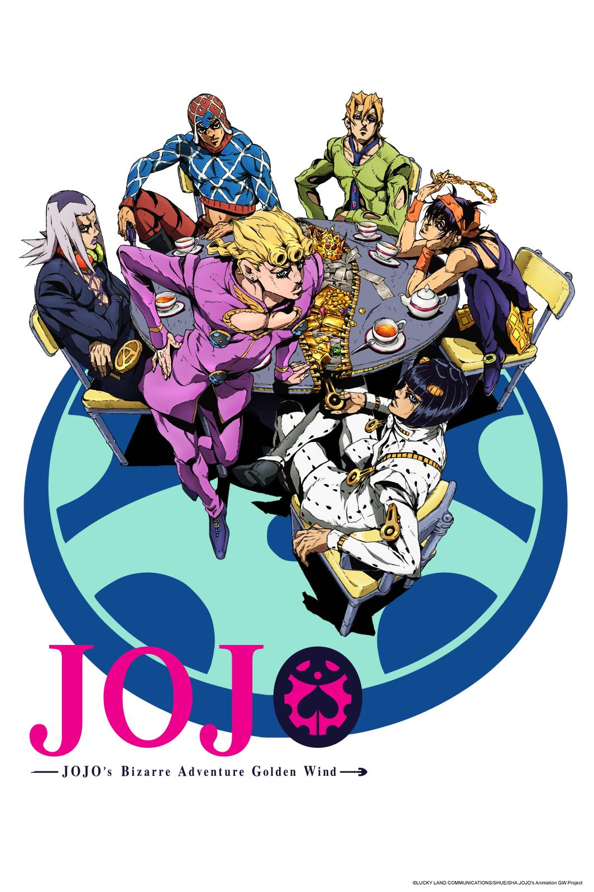

Jojo's
Bizarre Adventure
JoJo's é conta a história da família Joestar, uma família cujos vários membros descobrem que estão destinados a derrubar inimigos sobrenaturais usando poderes únicos que possuem.
Sendo dividido em 8 partes únicas, cada uma seguindo a história de um membro da família Joestar, que inevitavelmente tem um nome que pode ser abreviado para o titular "JoJo".
As primeiras seis partes da série ocorrem em uma única continuidade, enquanto as partes 7 e 8 ocorrem em uma continuidade alternativa.

Voltar